Oddaljenost
Civilizacija, kje si?
Koča stoji sama, na robu večje gozdne jase. Tako daleč je vse ostalo:
- Koča Studenojasa, mlaka, balinišče in gozd naokrog
- 700 mnajbližja stavba – lovska koča Rimsko
- 1,3 kmdo asfaltne ceste
- 3 kmnajbližja vas, Knežja Lipa
- 17 kmKočevje
- 77 kmLjubljana
- 93 kmReka, Hrvaška
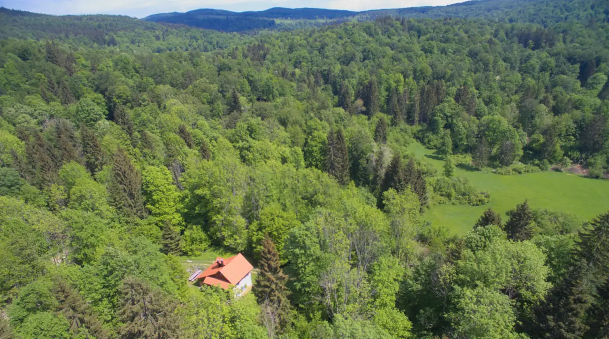
Opozorilo!To je koča sredi neskončnih kočevskih gozdov
- Elektrika
- Koča sredi gozda ima elektriko, kar je pravi čudež in nekoliko daljša zgodba.
- Ogrevanje
- Večinoma s tremi kamini in dvema šporhetoma. Spodnjo kuhinjo, »jugonostalgično« sobo in dnevni prostor je mogoče ogrevati tudi talno.
- Voda
- Kapnica, filtrirana – za kuhanje, tuširanje in umivanje zob. Za pitje je v koči na voljo ustekleničena voda.
- Vode ni v neomejenih količinah
- Če zmanjka, jo morajo iz Kočevja pripeljati gasilci.
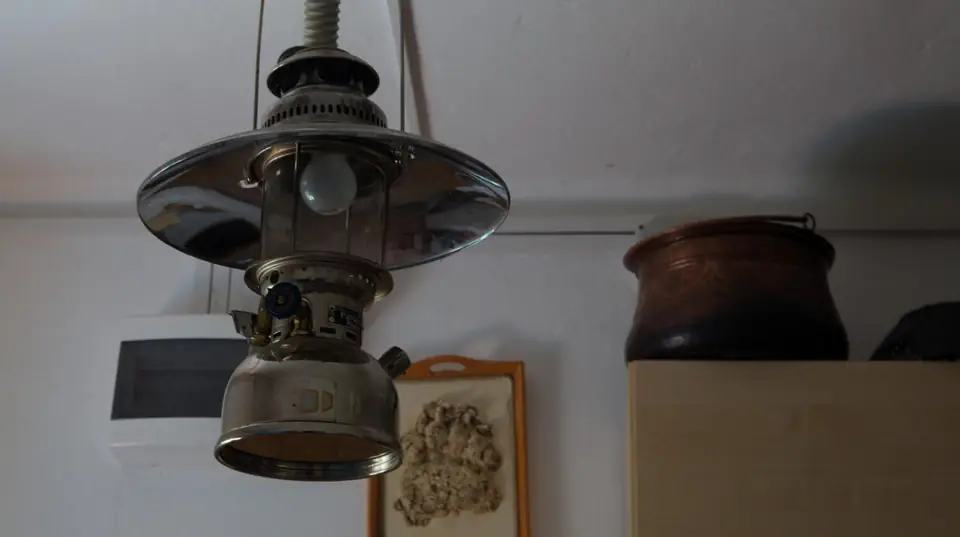
Notranjost
Sproščeno, nenavadno, domače
Prostori v koči imajo svoja imena – in malce nenavadno opremo.
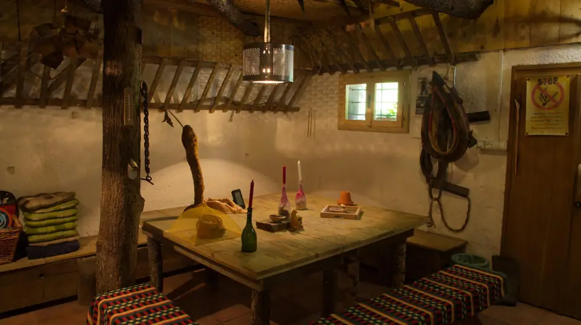
»Štala«
Dnevni prostor.
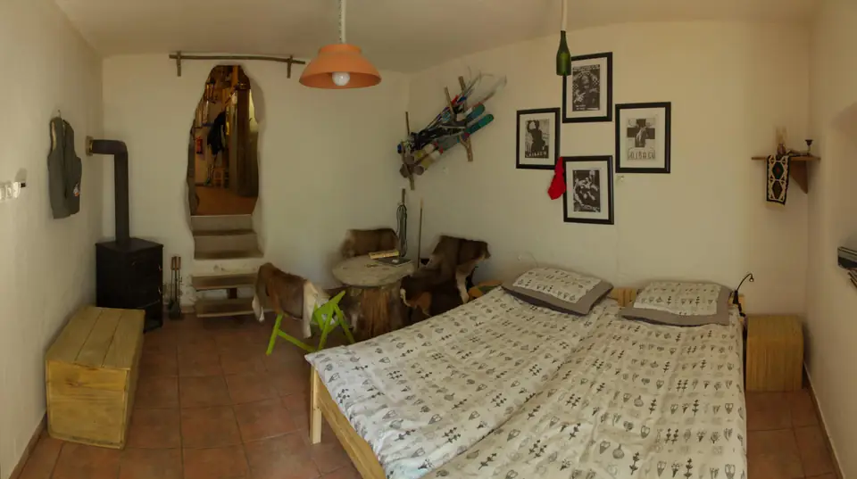
»Jugonostalgična« soba
Spalnica.
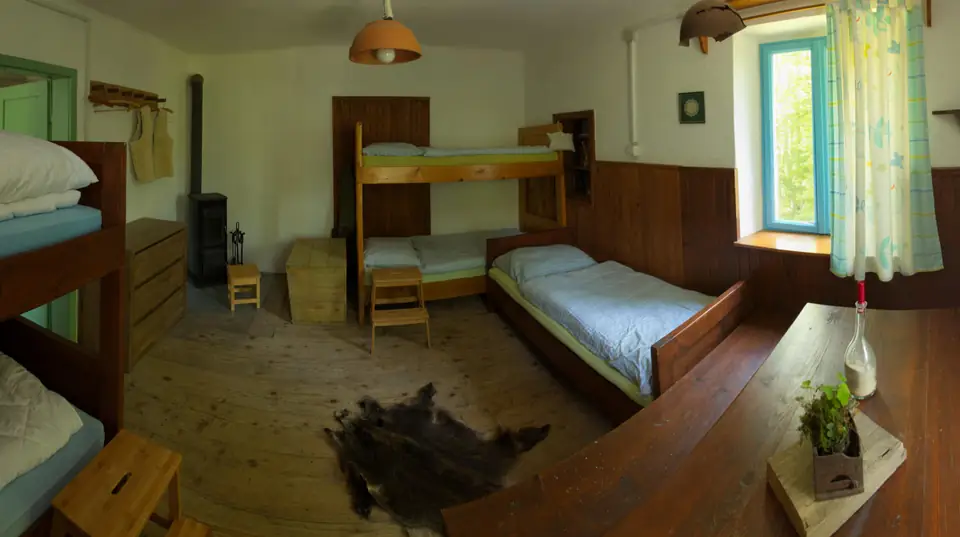
Stara gozdarska spalnica
Spalnica.
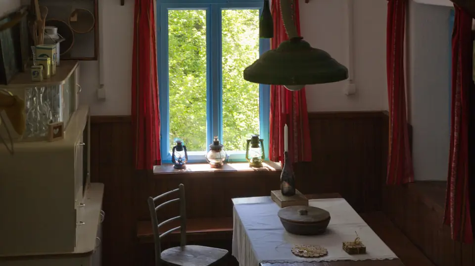
Stara kuhinja
Kuhinja z mizo pri oknu.
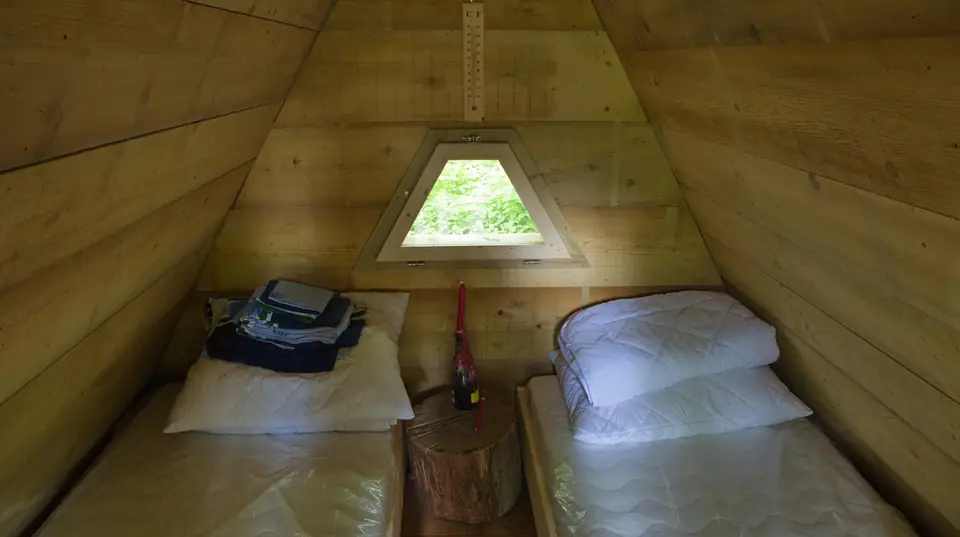
Kožarca
Notranjost kožarce.
V koči je dvanajst ležišč. Na podstrešni sobi se lahko z vzmetnicami prenočitvene zmogljivosti še povečajo. Kdor želi, lahko v okolici koče prespi tudi »pod smreko«.
Kulinarika
Kaj za pojesti?!
V koči si hrano pripravite sami: v kuhinji je množica začimb, pred kočo pa začimbni in zeliščni vrt. Na urejenem prostoru pri koči lahko pečete na žaru ali kuhate v kotličku na ognju.
Po vaši želji vam lahko zagotovijo tudi surovino za peko ali vam jo spečejo:
Po dogovoru vam gostitelj ali kak drug mojster kulinarike skuha lokalno specialiteto. V okolici je tudi veliko divje hrane – gob in raznih plodov.
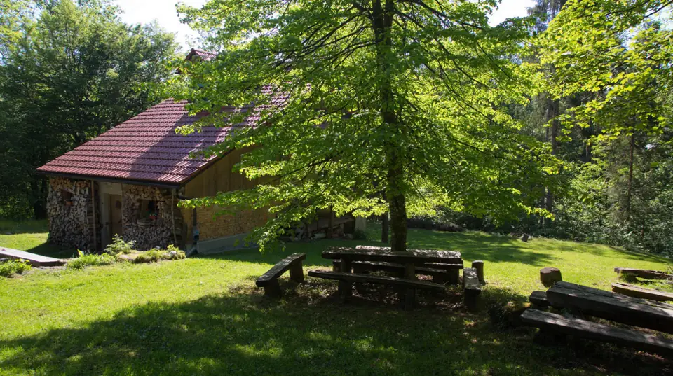
Zgodba kraja
Studeno po nemško Brunnsee
Naselje Studeno je ime dobilo po mrzlem studencu. Zgodovinski viri ga prvič omenjajo leta 1558, ko so prvotni prebivalci pokrajine – Kočevski Nemci – v manjši dolini med temi kraji postavili prva bivališča:
- Knežja Lipa
- Graflinden
- Rimsko
- Römergrund
- Kačji potok
- Otterbach
- Svetli Potok
- Lichtenbach
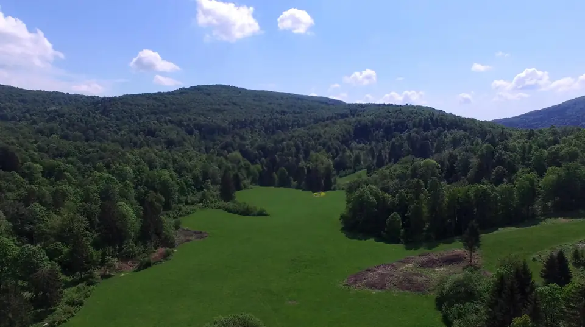
Doživetje z vodiči
Občutite kočevske gozdove
Iz koče z licenciranimi vodiči v enega najbolj divjih in neokrnjenih okolij Slovenije – za 2 do 8 oseb. Gosti izberejo dva sklopa doživetij, vsakega za en dan.
- 1. dan
Prihod ob 16.00, manjši prigrizek. Gostitelj predstavi kočo in okolico. Namestitev, odhod v gostišče (po dogovoru katering), prenočitev.
- 2. dan
Zajtrk, nato doživetje z vodičem. S seboj dobite piknik košaro. Zvečer večerja.
- 3. dan
Zajtrk, drugo izbrano doživetje s piknik košaro, večerja v gostišču.
- 4. dan
Zajtrk in odhod po 10.00.
Sklopi: preživetje in team building; ogled UNESCO pragozda Krokar, Debele jelke, Prelesnikove koliševke, pomola Loška stena nad Osilnico, ostankov ozkotirne železnice v Rogu, ruševin vasice Svetli Potok in cerkve sv. Magdalene; rastline in živali, zgodovina Kočevske, vodeno fotografiranje; po dogovoru spust po Kolpi. Najpogumnejši lahko prespijo v bivakih, ki si jih zgradijo sami.
Prijava: info@studeno.si ali na kocevsko.com.
Aktivnosti
Kaj početi, ko polnite baterije
- balinanje – ob koči je balinišče
- opazovanje divjih živali
- lov in fotolov
- naravoslovna fotografija
- pohodništvo
- kolesarjenje, MTB center Kočevje
- jahanje
- ribolov na Kolpi in Rinži
- rafting po Kolpi
- jadranje in supanje na Kočevskem jezeru
- raziskovanje jam
- izleti do pragozdov Krokar in Rajhenavski
Časovni preskok – v zimo
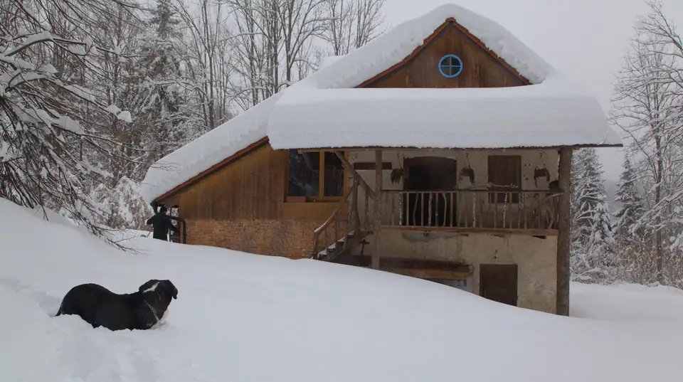
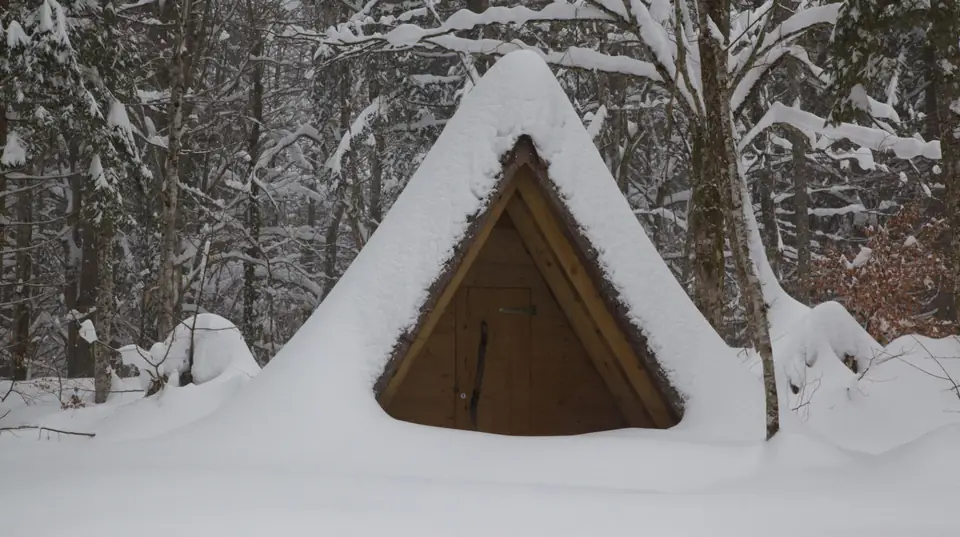
Rezervacija in vprašanja
Gozdna koča StudenoKnežja Lipa 8, 1330 Kočevje
info@studeno.si 041 410 841
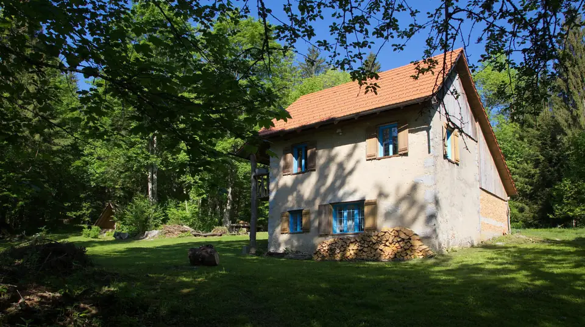